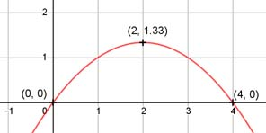

Aufgabe 6 4 1 f(x) = ---x - ---x2 3 3 4 2 2 f'(x) = --- - ---x, f''(x) = - ---, f'''(x) = 0 3 3 3 Definitionsbereich: -∞ < x < ∞ 4 Wertebereich: -∞ < f(x) ≤ --- 3 (siehe Extrempunkte) Asymptoten: - Symmetrie: - Nullstellen: 4 1 ---x - ---x2 = 0 | * 3 3 3 4x - x2 = 0 x * (4 - x) = 0 x1 = 0 x2 = 4 N1(0|0), N2(4|0) Schnittpunkt mit der y-Achse: 4 1 f(0) = --- * 0 - --- * 02 = 0 3 3 Sy(0|0) Extrempunkte: 4 2 --- - ---x = 0 | *3 3 3 4 - 2x = 0 |+2x 2x = 4 |:2 4 1 4 x = 2, f(2) = --- * 2 - --- * 22 = --- 3 3 3 2 4 f''(2) = - --- < 0 --> Hochpunkt (2|---) 3 3 Alternativ: Scheitelpunktberechnung 4 1 1 f(x) = ---x - ---x2 |(:- ---) 3 3 3 f(x) ------ = -4x + x2 1 - --- 3 f(x) 1 ------ = (x - 2)2 - 4 | *(- ---) 1 3 - --- 3 1 4 f(x) = - --- (x - 2)2 + --- 3 3 4 S(2| ---) 3 Wendepunkte: 2 - --- = 0 --> Widerspruch, keine Wendepunkte 3 Graph:
